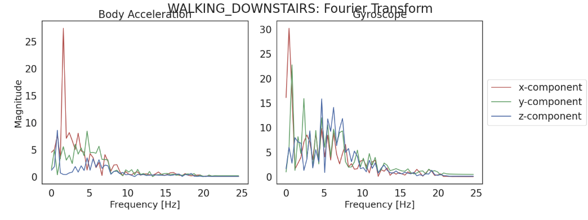
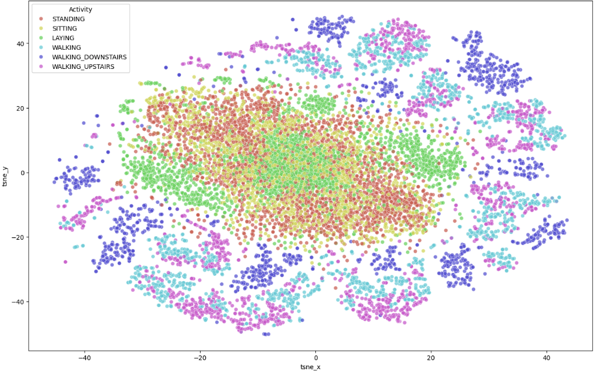
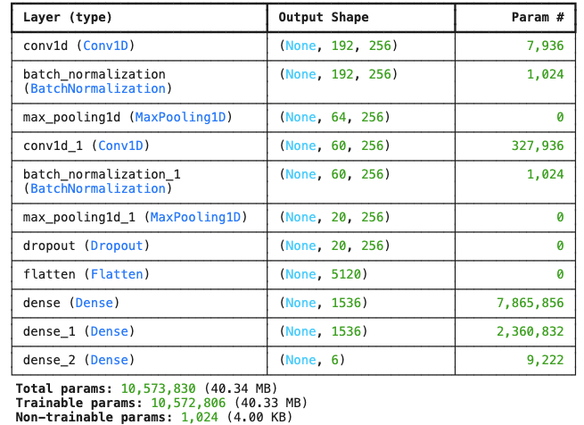
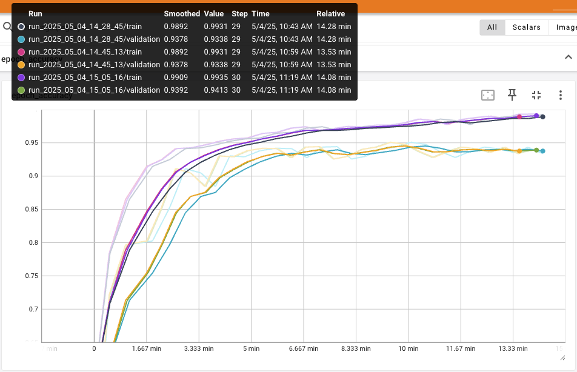

Human Activity Recognition (HAR) and Monitoring
This study focuses on using raw inertial sensor data to predict human activity, aiming to simplify traditional approaches that require extensive expertise in signal processing. I leverage a one-dimensional convolutional neural network (1D-CNN) with minimal feature engineering to classify six activities of daily living (ADLs). These ADLs are categorized into two main groups: sedentary and active, which are crucial for monitoring and encouraging physical activity.
Accelerometers measure acceleration in orthogonal directions within a three-dimensional space (x, y, z axes). Gyroscopes quantify angular velocity or the rate at which an object rotates relative to another point. Accelerometer and gyroscope sensor properties are recorded in terms of their rate of change. These sensors have adjustable sampling frequency ranges that can be optimized to capture physical activity data useful for machine learning algorithms to predict sedentary or active states. The data used in this study were captured at 50 Hz (50 data points per second).
The ability to accurately predict human activity from raw sensor data can lower barriers to effective product options for aging and at-risk populations. Effective system design requirements include a low memory footprint and computational costs. Meeting these design requirements, an effective machine learning classifier could make device options more accessible to those who could benefit most.
Inertial sensors, such as accelerometers and gyroscopes, track motion, position, and location with minimal external references. In areas where GPS signals are weak or compromised, inertial sensors can be invaluable. This technology has numerous applications in both the commercial and military domains.
Smartphones and wearables, including watches and even rings, commonly incorporate inertial sensors. Recent studies indicate that the adult population (18+) of Americans owning smartphones or other wearable devices containing these sensors has surpassed 90% (Sidoti, et al, 2024). This translates to over 230 million Americans with an ability to use sensor data to benefit their health and wellbeing. However, the high cost of these devices can be a barrier for other marginal groups. Addressing affordability could help bridge this gap.
Physical inactivity increases the risk of various adverse health conditions, such as coronary heart disease and type-2 diabetes, which can shorten life expectancy. Machine learning models that leverage inertial data can play a crucial role in monitoring and encouraging physical activity. By inducing physical activity through effective and afforable technology, we can make a positive difference in the health and wellbeing of populations who may not have access to more advanced forms of physical trackers.
The initial research question for this project was could raw, inertial data from modern smartphones and wearables be used to train and evaluate a machine learning model for the accurate (>80%) prediction of low-intensity human activities. Contingent on results of the initial research question, applicable follow-on questions were considered:
UCI-HAR Dataset:
The Human Activity Recognition (HAR) Using Smartphones dataset hosted by the University of California at Irvine is built from the recordings of 30 subjects performing activities of daily life (ADL) with smartphones mounted to their waists. The dataset contains triaxial acceleration from the smartphone's embedded accelerometer and triaxial angular velocity from the gyroscope. The dataset contains a total of over 10,000 sample observations of 128 discrete datapoints each, captured across 9 channels at 50 Hz. The data includes total acceleration, body acceleration, and angular velocity (gyroscope) across 3 axes (x, y, and z).
The 30 volunteers, aged 19-48, wore waist-mounted Galaxy S II smartphones to record their activities. The six ADLs being tracked were standing, sitting, laying down, walking, walking downstairs and working upstairs. The dataset comes from raw sensors employed in many modern-day consumers electronic and IoT devices. Note that a low-pass Butterworth filter with a cutoff frequency of 20 Hz removed noise (non-human activity) from the signals.
UCI-HAR Dataset DOI:10.24432/C54S4K
KU-HAR Dataset:
A second dataset was introduced to evaluate model results. The Khulna University (KU-HAR) dataset contains data from 90 participants ages 18-35 performing 18 different human activities for 3 seconds. The dataset subsample of raw data contains a total of over 20,750 samples of non-overlapping human activity data captured for 3 seconds at 100 Hz.
To make use of this data I had to normalize it to confirm to the UCI-HAR dataset. The data was subset down to the 6 ADLs being researched, from the original 18. Then the data was trimmed to 128 discrete samples from 300. The 100 Hz sample rate makes sense given the active nature of some of the 18 human activities and the Nyquist Theorem, but the 6 human activities being researched here are predominantly in the 10-20 Hz range. Therefore at 100 Hz, this dataset contained added noise. The KU-HAR dataset proved useful after scaling.
KU-HAR Dataset DOI:10.1016/j.patrec.2021.02.024
Early Data Analysis proved challenging with the raw triaxial signals. Visualizing three axes (x, y, z) signal amplitudes over time showed no clear discernable patterns to the naked eye. Once the data was transformed using Discrete Fourier transforms (DFT) and then clustered using t-distributed stochastic neighbor embedding (t-SNE), the data became more interpretable.
A Fourier Transform decomposes a signal into its constituent frequencies and shows the power (magnitude). This allows you to see independent frequencies and their relative power versus in the time-domain, where you see a waveform that is comprised of the sum of multiple characteristics.

A t-distributed stochastic neighbor embedding (t-SNE) is a machine learning algorithm for dimensionality reduction. It was used on this project because it is also well-suited for visualizing high-dimensional datasets. It converts similarities between data points into joint probabilities and then minimizes the divergence between these probabilities in the high-dimensional and lower-dimensional (2D) space. This enables you to visualize how the data clusters and separates, which was the objective here in determining if the data patterns afforded a classifier the ability to cleanly separate human activity classes.

Data standardization was performed using StandardScaler (Scikit-learn, n.d.). The scaler was fit only on the training data to prevent data leakage. This provided the dataset a mean of 0 and variance of 1. Frequency domain features were then created for both the accelerometer and gyroscope data. Based on the 128-sample window, 64 transform features were created for each of the x, y, and z signals. The default is to create a Fourier transform for only the positive frequencies. The positive and negative frequencies are symmetrical about zero. Therefore, the negative values reveal no useful patterns for modeling. Additional time-domain features were also created. These included mean, standard deviation, root mean square (RMS) and zero crossing rate (ZCR).
The final dataset contained 196 features for each of the 6 signal channels (x,y,z for accelerometer and gyroscope) across both the UCI-HAR and KU-HAR datasets.
Model Summary:
A Sequential Convolutional Neural Network (CNN) model was developed using TensorFlow and Keras. The model consists of two one-dimensional convolutional layers, each followed by batch normalization layers and a max pooling layer. Batch normalization standardizes the inputs of each layer by reducing any internal covariate shifts. Activations get scaled and shifted using learnable parameters. This permits the model to adapt to an optimal activation distribution coming out of the convolutional layers. Pooling layer reduces the configured spatial learned features and consolidates them down to the most essential. The model uses max pooling, which down samples using the max features over the pool’s window. A final form of regularization being is a dropout layer. Feature maps produced by the convolutional and pooling layers get flattened into vectors before being fed into the fully connected layers (FCLs). After flattening, data is fed into two FCLs which contain 1536 neurons each. Lastly, the data flows through a final dense layer with 6 outputs. This layer outputs a logit for each target class. These go through a SoftMax activation function. The class with the highest probability is the predicted class. Below is the model summary.

Model Performance:
The model was trained using the Adaptive Moment Estimation (Adam) optimizer with a learning rate of 0.001. The loss function used was categorical cross-entropy. The model was trained for ~30 epochs with a batch size of 128. The training and validation data were split 80/20. The model achieved a smoothed accuracy of 98% on training data and 93% on validation data.

The objective of this research was to prove whether a lightweight machine learning model using raw triaxial signal data from an accelerometer and gyroscope could produce accurate classification results in recognizing low intensity human activity. Historically human activity recognition requires excessive domain experience and the need to create handcrafted features. Accurately predicting low-intensity human activities without requiring excessive feature engineering can lift barriers and create a potential for product options that could benefit aging and at-risk populations.
This research concludes that a lightweight convolutional neural network (CNN) with just over 10 million parameters can effectively classify low-intensity human activities with better than 90% accuracy on never before seen test data. While some additional features were engineered for the project, CNNs are adept at extracting meaningful features from time-series data and even reducing the noise in the signal data when properly tuned and regularized. Using multiple sets of test data and evaluating higher-level classes of sedentary and active, the classifier achieved almost perfect results with the added features. Results were an acceptable 90% accuracy when using the raw signal data.
Links: